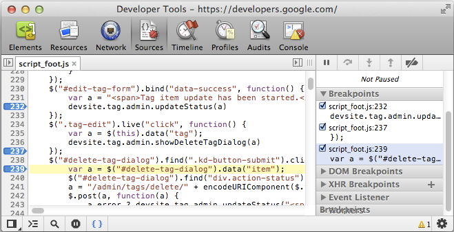
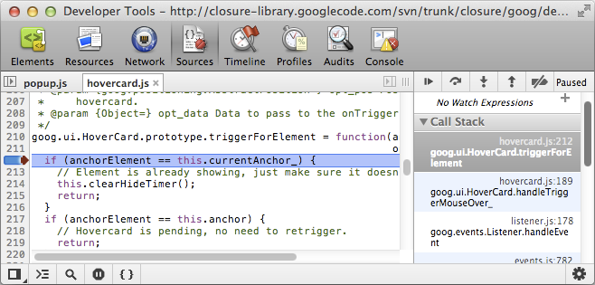
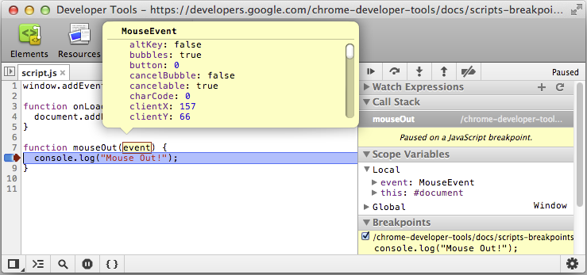
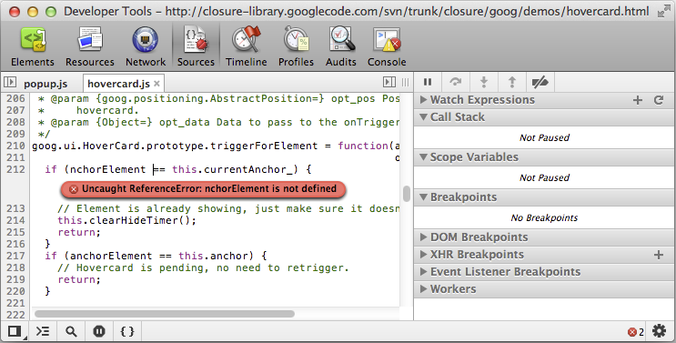
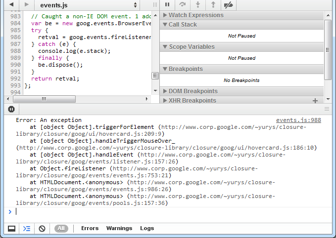
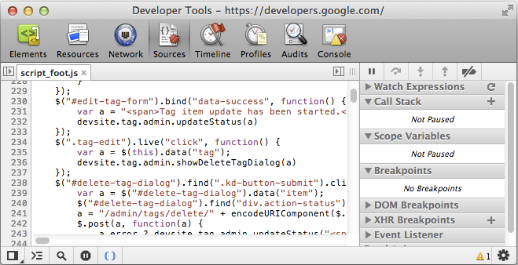

05-Debugging JavaScript
Table of Contents
1 Debugging JavaScript JavaScript のデバッグ (Last updated 2013-11-04)
JavaScript アプリケーション増加の complexity (複雑さ) として、開発者は、速く問題の原因を発見し、かつそれを効率的にFIXするのを支援するために強力なデバッグ用ツールを必要とします。 Chrome DevTools は、JavaScript を debugging (デバッグすること) をそれほど痛くなくするのを支援する多くの有用なツールを含んでいます。
このセクションでは、Google Closure hovercard demo ( goog.ui.HoverCard ) と、このページにある他の動的な例をデバッグすることによって、これらのツールを使用する方法をウォークスルーします。
注: ウェブディベロッパーで、DevToolsの最新バージョンを得たければ、Chrome Canary を使用するべきです。
1.1 Sources (ソース) パネル The Sources Panel
Sources パネルはあなたにあなたの JavaScript コードをデバッグさせます。 それは V8 デバッガにグラフィカル・インターフェースを供給します。 Sources パネルを調査するために下記のステップに従ってください:
- Google Closure hovercard デモページ goog.ui.HoverCard を開く
- このチュートリアルの DevTools セクションにアクセスする方法で説明したように DevTools ウィンドウを開きます
- 選択されていない場合は、[Sources ソース] を選択。

Sources [ソース] パネルでは、検査 (inspected) のページの一部であるすべてのスクリプトを確認できます。 一時停止、再開、およびコードをステップ実行するための標準的なコントロールは、パネル選択アイコンの下に設けられている。 (mi注: 2013-11 から上に配置された) 例外 (exceptions) で一時停止を強制するためのボタンがウィンドウの下部にあります。 (mi注: コンセントみたいなアイコン。紫にすると良いやつ。) ソースは、個別のタブに表示され、「 |> 」(左上のアイコン) をクリックすると、開いているすべてのスクリプトが表示され、ファイルナビゲータを開きます。

1.1.1 実行制御 Execution control
実行制御ボタンは (mi注: 右) 側面の一番上に位置し、あなたがコードによって歩むことを可能にします。 利用可能なボタンは次のとおりです:
| Continue (継続): | 私たちが別の区切り点に遭遇するまで、コード実行を継続します。 | 再生ボタンを縦に分割したようなアイコン |
| Step over (ステップオーバー): | 各ラインが更新されている変数にどのような影響を与えるかについての洞察を得るために、コード行ずつステップ実行。 | 「右に回す」のようなアイコン |
| あなたのコードが別の関数を呼び出す必要があり、デバッガは、フォーカスが現在の関数に残るようにする代わりステップオーバー、そのコードにジャンプしません。 | ||
| Step into: | ステップオーバーのようだが、ただし、関数呼び出し時にステップをクリックすると、デバッガは関数の定義の最初の行に実行を移動させることになります。 | 「押している」ようなアイコン |
| Step out: | 関数に足を踏み入れた (stepped into) 、 これを選択する (clicked) と、関数定義の残りの部分が実行されるようになりますし、デバッガが親関数にその実行を移動します。 | 「出て行く」ようなアイコン |
| Toggle breakpoints (ブレークポイントを切り替える) | そのままその有効な状態を残したまま、オン/オフのブレークポイントを切り替えます。 | 進む矢印に打ち消し線 |
Sources パネルにおいて利用可能ないくつかの関連するキーボード・ショートカットがさらにあります:
| on Mac | other platforms | |
|---|---|---|
| Continue: | [F8] or [Command-/] (forward slash) | [Control-/] (forward slash) |
| Step over: | F10 or Command-' (apostrophe) | Control-' (apostrophe) |
| Step into: | F11 or Command-; (semi-colon) | Control-; (semi-colon); |
| Step out | Shift-F11 or Shift-Command-; (semi-colon) | Shift-Control-; (semi-colon) |
| Next call frame | Control-. (period) | Control-. (period) |
| Previous call frame | Control-, (comma) | Control-, (comma) |
支援された他のキーボード・ショートカットのウォークスルーについては、Keyboard Shortcuts - Chrome DevTools — Google Developers を参照してください。
1.2 ブレークポイント (区切り点) によるデバッグ Debugging With Breakpoints
ブレークポイントは、デバッグのために場所に置くスクリプト内の意図的な (intentional) 停止や一時停止場所です。 アプリケーションのUIとネットワークの側面 (様相, aspects) をターゲットにした、JavaScriptコードおよびブレークポイント上でセットされたブレークポイントを使用して、debuggingJavaScript を見よう。
- ワークフロー Workflow
まず、[control-Shift-I\ キーのショートカットを押すことで DevTools を開きます。 その命令行のためにブレークポイント(区切り点)をセットするためにライン溝(gutter)をクリックして、別のスクリプトを選択して、別のブレークポイント(区切り点)をセットしてください。

設定したすべてのブレークポイントは右のサイドバーの 「Breakpoints」 のところに表示されます。 ブレークポイントは、このサイドバーにあるチェックボックスを使用して有効か/無効にすることができます。

エントリーをクリックすると、ソース・ファイル中の強調されたラインへジャンプします。 1つ以上のスクリプトの中で1つ以上の区切り点をセットすることができます。

青いタグ (blue tag) ブレークポイント(区切り点) 指標のクリックによりブレークポイントを削除してください。 ブレークポイントのインジケータ(indicator, 指標)メニューは、いくつかのオプションを含みます。 "Continue to here", 「ここを続行する」、 "Edit Breakpoint", 「編集ブレークポイント」、 "Disable Breakpoint" and 「無効ブレークポイント」と ローカルにファイルを保存しているなら "Save As", 「名前を付けて保存」、

ブレークポイントを設定したら、その特定のブレークポイントの条件文 (conditional statement) を設定するためにガターラインに青い矢印タグインジケータを右クリックすることができます。 任意の式 (expression) を入力して、ブレークポイントは、条件が真の場合のみ停止します。 タグは、active (アクティブ)、inactive (非アクティブ)、および removed (削除) の三つの状態を順に切り替えます。
Pause (一時停止) ボタンをクリックし、Google Closure hovercard のデモページの上にマウスを移動します。

スクリプトを一時停止している間は、右側のバーに現在のコールスタック (current call stack) とスコープ内の変数 (in-scope variables) を見ることができます。 コール・スタックは、コードがあったポイントに通じた完全な実行経路を表示します、私たちにエラーを引き起こしたコードの欠点に対する洞察力を与えて休止します。
また、一時停止しながら実験するためにコンソールを開くことができます。 ビューにコンソールを持って来るために、[Esc] キーを押してください。
次のことを覚えておいてください Remember: | コンソールは、デバッガが現在一時停止している場所の範囲内で評価されます。
あなたのコードがもし20ミリセカンドごとを発射するループを使用していたら、思い出してください、恐らくデバッガが各反復上で halt (停止) することは望まないでしょう。 条件文/ブレークポイントを使用すると、これを支援することができます。 下記の例において、minLevel変数が 2004 より大きい場合にはコードの実行は、中断しますので、私たちは、デバッガで追加のクリックの数を回避けるために役立ちます。
注：DevToolsインターフェースからブレークポイントを設定することは望ましくないことがあります。 コードからデバッガを起動したいならば、あなたはこれを達成するために、デバッガキーワード Using the Console - Chrome DevTools — Google Developers を使用することができます。
- Using Breakpoints ブレークポイントの使用
ソース・パネルが開いていることを確かめて、スクリプトのドロップダウンから「script.js」を選びます。
- ラインガターをクリックして、8 行目にブレークポイントを設定 (大きなファイルで行を明示的に移動するには [Ctrl + G] のショートカットを使用することができます)
- このページの上にマウスを移動
- ブレークポイントで停止する必要があります
- ローカル変数とグローバル変数、関数の引数などを検査するために、ソースコードの上にマウスポインターを移動
- ブレークポイントのブルータグのインジケータをクリックして、ブレークポイントを削除する
- [Continue 続行]ボタン (再生ボタンぽいの) をクリックするか、再開するDevToolsウィンドウに [F8] キーを打つ

- 動的な JavaScript の中のブレークポイント (区切り点) Breakpoints in Dynamic JavaScript
- 動的なスクリプトをロード (mi注: <- この行がボタンになっている)
- Sources パネルで、scripts ドロップダウンから「dynamicScript.js」を選ぶ、また 2行目にブレークポイントを設定する
- 動的なスクリプトから関数を呼び出す (mi注: <- この行がボタンになっている。初期は、非クリッカブル)
- あなたは、ブレークポイントで停止する必要があります
- [Continue 続行] ボタンをクリックするか、再開する DevTools ウィンドウに [F8] キーを打つ
注意：dynamicScript.jsファイルの末尾に "//@ sourceURLに= dynamicScript.js"行に注目してください。 この技術は、evalを用いて作成されたスクリプトに名前を与え、Source Maps のセクションでより詳細に説明する。 ブレークポイントは、ユーザ指定された名前を持っている場合にのみ、動的なJavaScriptで設定することができます。
- 次の JavaScript ステートメント中の休止 Pause on Next JavaScript Statement
- [Pause 一時停止] ボタンをクリックしてください
- このセクションの上にマウスを移動
- あなたはの onmouseover 関数で停止する必要があります
- [続行] ボタンをクリックするか、再開する DevTools ウィンドウに [F8] キーを打つ
- 例外で一時停止 Pause on Exceptions
- Pause on all exceptions (すべての例外で一時停止) モードに切り替えるには、ウィンドウの下部にある Pause on exceptions (例外で一時停止) ボタン (コンセントみたいなボタン) をクリックします
- 例外を発生させる！ (Raise exception!) (mi注: <- この行がボタンになっている。)
- あなたは raiseAndCatchException 関数で停止する必要があります
- [続行] ボタンをクリックするか、再開する DevTools ウィンドウに [F8] キーを打つ
- キャッチされない例外で一時停止 Pause on Uncaught Exceptions
- Pause on uncaught exceptions (キャッチされない例外で一時停止) モードに切り替えるには、もう一度 Pause on exceptions (例外で一時停止) ボタン (コンセントみたいなボタン) をクリックします
- 例外を発生させる！ (Raise exception!) (mi注: <- この行がボタンになっている。)
- 例外がキャッチされているために、raiseAndCatchException 関数で停止しないでください
- キャッチされない例外を発生させる！ Raise uncaught exception! (mi注: <- この行がボタンになっている。)
- あなたは raiseException を関数で停止する必要があります
- [続行] ボタンをクリックするか、再開する DevTools ウィンドウに [F8] キーを打つ
- 以下の「Parent Element (親元素)」を右クリックして、コンテキストメニューから [Inspect Element (エレメントを検査する)] を選択してください。
- Elements (要素) のパネルで要素を右クリックして、[Break on Subtree Modifications] (サブツリー修正中のブレーク) を選択してください。
- 子どもを追加してください! Append child! (mi注: <- この行がボタンになっている。)
- appendChild 関数呼び出しの上で止まるべきです。
- [続行] ボタンをクリックするか、再開する DevTools ウィンドウに [F8] キーを打つ
- Sources パネルの右側に XHR ブレークポイント (XHR Breakpoints) のサイドバーのペインにある[Add (追加)]ボタン (＋) をクリックします
- テキスト入力欄に「data.txt」と入力し、Enter キーを押す
- XHRでdata.txtを取得 (mi注: <- ボタン)
- あなたは、send (送信) 関数の呼び出しで停止する必要があります
- 新しく作成されたブレークポイントを右クリックし、コンテキストメニュー項目から [Remove Breakpoint] を選択
- [続行] ボタンをクリックするか、再開する DevTools ウィンドウに [F8] キーを打つ
- スクリプトパネルの右側に Event Listener Breakpoints のサイドバーのペインを展開します
- マウス入力 (Mouse entry) を展開
- マウスアウトエントリ (mouseout entry) 近くのチェックボックスをクリックすることにより、マウスアウトイベントリスナにブレークポイントを設定
- 下のようなボックスを横切るようにマウスを移動させてください:
1.2.1 DOM 変化イベント上のブレークポイント Breakpoints on DOM Mutation Events
1.2.2 XHRの上のブレークポイント Breakpoints on XHR
注意： URL フィルタ、XHR ブレークポイントのサイドバーペインの XHR のブレークポイントエントリをダブルクリックして編集します。 空のURLフィルタを備えたXHR区切り点はどんなXHRとも一致するでしょう。
1.2.3 JavaScriptのイベントリスナにブレークポイント Breakpoints on JavaScript Event Listeners
Note: Following events are supported Keyboard: keydown, keypress, keyup, textInput Mouse: click, dblclick, mousedown, mouseup, mouseover, mousemove, mouseout, mousewheel Control: resize, scroll, zoom, focus, blur, select, change, submit, reset Clipboard: copy, cut, paste, beforecopy, beforecut, beforepaste Load: load, unload, abort, error DOM Mutation: DOMActivate, DOMFocusIn, DOMFocusOut, DOMAttrModified, DOMCharacterDataModified, DOMNodeInserted, DOMNodeInsertedIntoDocument, DOMNodeRemoved, DOMNodeRemovedFromDocument, DOMSubtreeModified, DOMContentLoaded Device: deviceorientation, devicemotion
1.3 ライブ編集 Live Editing
Authoring And Workflow (オーサリングとワークフロー) では、Sources パネル内のスクリプトに変更を加える方法を説明しました。 ブレークポイントでいる間、さらに、主なエディター・パネルへクリックし修正をすることにより、編集スクリプトを実践することは可能である。
- goog.ui.HoverCard デモに移動します
- Sources パネルでは、「mouse.js」を開き、onMouseOut() 関数に移動するために [Ctrl/ Cmd + Shift + O] を使用
- デバッグを一時停止する pause ボタンをクリックしてください
- 関数を変更、console.log('Moused out') を最後に追加
- [Cmd +S or Ctrl + S] ショートカットを使い、これらの変更を保存します。名前を付けて保存してください。
- 実行を再開するために、一時停止/再開ボタンをクリックしてください
- hover out すると、新しいメッセージがコンソールに記録されます

これは、あなたのブラウザを離れることなくDevTools内から変更を保存することができます。
1.4 例外処理 Handling Exceptions
それでは、Chrome DevTools を使用して例外とスタックトレースに対処する方法を見てみましょう。 例外処理 (Exception handling) は、多くの場合、JavaScript コードの実行の通常の流れを変える例外 - 特別な処理を必要とする例外的な状況 - の発生に応答するプロセスです。
注：Web開発者であり、DevToolsの最新バージョンを取得したい場合は、Chromeのカナリアを使用する必要があります。
1.4.1 例外の追跡 Tracking exceptions
何かがうまく行かない場合、DevTools コンソール (Ctrl+Shift+J / Cmd+Option+J) を開き、そこに多くのジャバスクリプト・エラーメッセージを見つけることができます。 メッセージにはそれぞれナビゲートすることができる番号を備えたファイル名へのリンクがあります。

- 例外スタック・トレースを見ること Viewing exception stack trace
エラーに結びつくいくつかの実行パスがあるかもしれない。また、それらのどれが起こったかは必ずしも明白だとは限らない。 一旦 DevTools ウィンドウが開かれれば (Once DevTools window is opened) 、コンソール中の例外に完全な JavaScript コール・スタック (complete JavaScript call stacks) が伴われる。 スタック・フレームを見て、かつコード中の対応する位置へナビゲートする、これらのコンソール・メッセージを拡張することができる:

- JavaScript 例外上の休止 Pause on JavaScript exceptions
また、JavaScriptの実行、次回の例外がスローされた一時停止して、アプリケーションのそのコールスタック、スコープ変数と状態を検査することができます。 スクリプトパネルの下部にあるトライステート停止ボタン（コンセントみたいなボタン）を使用すると、さまざまな例外処理モードを切り替えることが可能になります。 すべての例外、あるいは uncaught (キャッチされていない) もの上ののみ一方の休止に選ぶことができます。あるいは、例外をすべて無視することができます。

1.4.2 スタックトレースを印刷する Printing stack traces
DevTools コンソールにログメッセージを印刷すると、アプリケーションがどのように動作するかを理解するのに非常に役立ちます。 あなたが関連するスタックトレースを含めることにより、ログエントリがさらに有益なことができます。 それを行うためのいくつかの方法がある。
- Error.stack
各Errorオブジェクトは、スタックトレースが含んでいる stack という名前の文字列プロパティがあります。:

- console.trace()
現在の JavaScript コールスタックを印刷する console.trace() コールを使用してコードを計測しながら実行できます。:
- console.assert()
JavaScript コードにアサーションを配置する方法もあります。 最初のパラメータとして、エラー状態を備え単に console.assert() を呼び出します。 この式がfalseに評価されるたびに、対応するコンソールレコードが表示されます。

1.4.3 window.onerror を使用して、実行時に例外の処理 Handling exceptions at runtime using window.onerror
Chrome は window.onerror するハンドラ関数を設定することがサポートされています。 JavaScriptの例外がウィンドウのコンテキストでスローされ、任意のtry / catchブロックでキャッチされていないときはいつでも、 関数は例外のメッセージで起動され、例外がスローされたファイルと、そのファイルの行番号のURLとして渡さの順に三つの引数。 キャッチされた例外に関する情報を収集し、それをサーバに戻って報告するエラーハンドラを設定することは便利であると感じるかもしれません。

1.5 きれいな印刷 Pretty Print
あなたは DevTools にミニファイされた JavaScriptを読んで、デバッグしようとして問題が発生した場合は、 きれいな印刷オプション (pretty printing option) は、生活をより便利に利用できます。
そこで中括弧 {}（「Pretty Print プリティ印刷」）、左下隅にあるアイコンをクリックして、JavaScript をより人間が読める形式に変換する。 さらに、これは区切り点のデバッグおよびセットにとってより簡単です。

1.6 ソースマップ Working With Source Maps
あなたは今まで自分では、パフォーマンスに影響を与えることなく、あなたが結合して、それを縮小した後でも、 クライアント側のコードを読みやすく維持し、より重要なのはデバッグ可能で望むものを見つけられたことがありますか？ 今は、ソースマップ Source Map Revision 3 Proposal - Google Drive の魔法を通じてできる。
ソースマップは、前処理 (pre-processed) されているファイルとポスト処理 (post-processed) されるものとの関係を作成するために 処理されたファイルで使用できる（JSONベース）汎用マッピング形式です。 私たちに最も関連するのは、彼らは、デバッグのために戻って未構築の状態に合わせて 結合され/縮小された スクリプトをマップするために使用することができるということである。
ソースマップ自体は、以下のように簡単に見えることができます。:
{
version : 3,
file: "out.js",
sourceRoot : "",
sources: ["foo.js", "bar.js"],
names: ["src", "maps", "are", "fun"],
mappings: "AAgBC,SAAQ,CAAEA"
}
その考えは、本番用にビルドするときです、 又は、JavaScriptファイルを結合し、縮小するとともに、あなたの元のファイルに関する情報を保持するソースマップを生成します。 あなたが生成された JavaScript 内の特定の行や列番号を照会するときには、元の場所に返すソースマップで検索を行うことができます。 DevTools は、自動的にソースマップを解析して、unminified と結合していないファイルを実行しているかのように見せることができます。
表示する前に、ソースマップの次の現実世界の実装では、 dev のツールパネルの[設定] COG をクリックして「Enable source maps ソースマップを有効にする」オプションをチェックして、ソースマップ機能を有効にしていることを確認してください。

有効になったソースマッピングで、Chromeでフォント dragr ツール font dragr | Drag and drop font testing の特別なビルドを見てみましょう、 あなたのJavaScriptがコンパイルされていない、あなたはすべての個々の JavaScript が、それが参照するファイルを見ることができることがわかります。 これは、ソース·マッピングを使用しますが、裏で実際にコンパイルされたコードを実行しています。 すべてのエラー、ログやブレークポイントは素晴らしいデバッグ用にdevのコードにマップされます！ したがって、実際にはそれはあなたが生産のDEVサイトを実行しているような錯覚を与えます。
1.6.1 ソース・マップはどのように作動しますか。 How do Source Maps work?
一旦、ソースマップを出力サポートしているツールを使用してJavaScriptを縮小したら、その側に sourcemap ファイルが存在します。 現在、クロージャコンパイラ Closure Compiler と UglifyJS2.0 は、これを達成するためのこのような2つのツールですが、そのサポートはCoffeeScriptのとSASSのソースマップを出力可能なツールもあります。 特別なコメントは、ソースマップが使用可能であるDevToolsに意味する、ファイルの最後に置かれます。
//@ sourceMappingURL=/path/to/file.js.map
これは、元のソースファイルに戻ってその場所への呼び出しをマッピングするDevToolsを可能にします。 あなたが変なコメントの考えが気に入らない場合は、代わりにコンパイル済みのJavaScriptファイルに特別なヘッダを設定することができます。:
X-SourceMap: /path/to/file.js.map
コメントのようこれはどこのJavaScriptファイルに関連付けられたソースマップを探すためにあなたのソースマップコンシューマーを教えてくれます。 このヘッダには、単一行コメントがサポートされていない言語でソースマップを参照する問題を取得します。
1.6.2 @sourceURL and displayName in action
次の規則スペックソースマップの一部ではないが版とそので作業する場合は、開発をより簡単にすることができますが。
このヘルパーは //@ sourceMappingURL 財産と非常によく似ていますし、実際にソースマップ V3 の仕様に記載されている。 彼らはあなたの dev のツールで、より論理名として表示されるように evaled され、コード内の以下の特別なコメントを含むことで、試用版とその名前を付けることができます。
//@ sourceURL=source.coffee
- sourceURL をつかって作業する Working with sourceURL
- デモ A simple example of //# sourceURL eval naming に移動します
- DevToolsを開き、ソース]パネルに移動します。
- 入力フィールド：名前、コードに、ファイル名に入力します。
- コンパイルボタンをクリックしてください。
- アラートは、CoffeeScriptのソースからの評価を合計して表示されます
- あなたはソースサブパネルを展開すると、今、あなたは、以前入力したカスタムファイル名で新規ファイルが表示されます。 このファイルを表示するには、ダブルクリックすると、それは私たちのオリジナルのソース用にコンパイルされたJavaScriptが含まれています。 最後の行にただし、元のソースファイルが何であったかを示す //@ sourceURL にコメントになります。 これは大幅に言語の抽象化を扱うとき、デバッグを支援することができます。

1.7 Read more
1.7.1 Conditional breakpoints
1.7.2 Working With Source Maps
The Breakpoint Ep 3: The Sourcemap Spectacular with Paul Irish and Addy Osmani - YouTube Introduction to JavaScript Source Maps - HTML5 Rocks An Introduction to Source Maps | Nettuts+ Source maps: languages, tools and other info · ryanseddon/source-map Wiki Multi-level Source maps | The CSS Ninja - All things CSS, JavaScript & HTML CoffeeScript Love: Source Maps for CoffeeScript